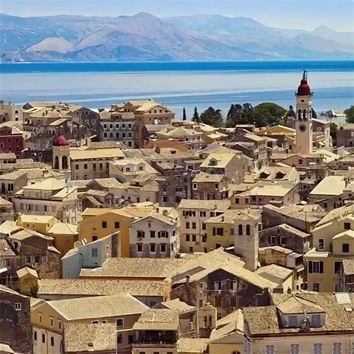
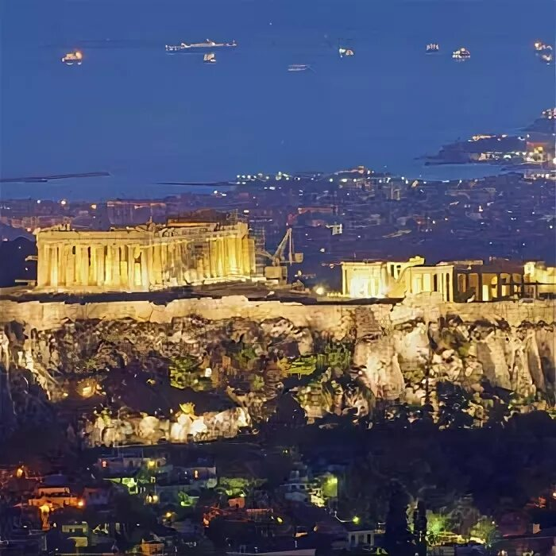
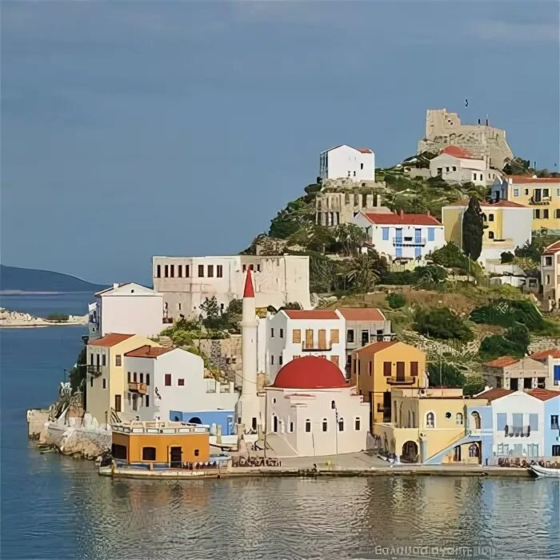
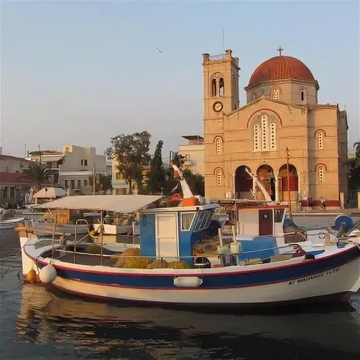

Великая Греция

Корфу
Любимый остов многих поломников, кто почитает и любит святого Спиридона Тримифунтского. Святой лежит в раке, но если она не открывается, значит Святой пошел кому-то помогать. Также остров находится напротив Албании.

Афины
Афины - столица Греции, где бок о бок находятся разные времена, а именно антично йкультуры и современности. В этом городе каждый человек может найти свое, то что ему будет близко и он почувствует что-то родное. Этот город совмещаетс в себе современность и духовность.
Чудо острова Греции - Великая духовность и опора православия.

Порто Лагос
Данное место можно назвать действительно сказачным, так как много людей уже могли увидеть чудеса Православия. На данном острове хранится Пояс Пресвятой Богородицы, который помог уже многим людям в их трудных жизненных ситуациях. Также некоторые люди видели Пресвятую Богородицу, как она погогала людям.

Остров Эгина
Данный остров необычен тем, что там жил и до сих пор помогает людям Святой Нектарий Эгинский. Он был, можно сказат почти нашим современником и прошел много испытаний, которые уготовила ему судьба. Он справидся и я всегда восхищаюсь его терпению, так как не многие люди могут так безусловно любить Бога. Поэтому это могут только святые.